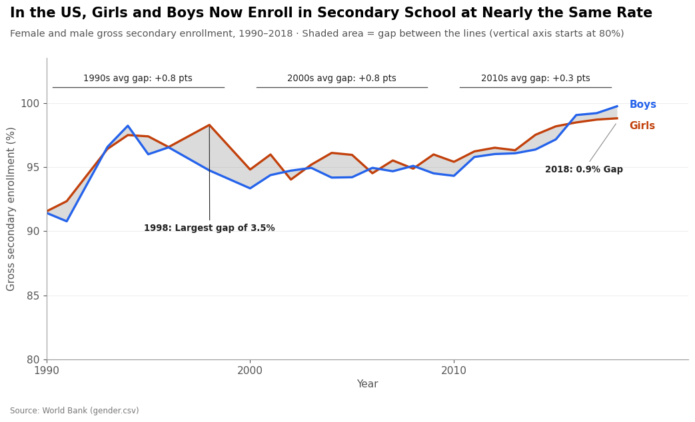
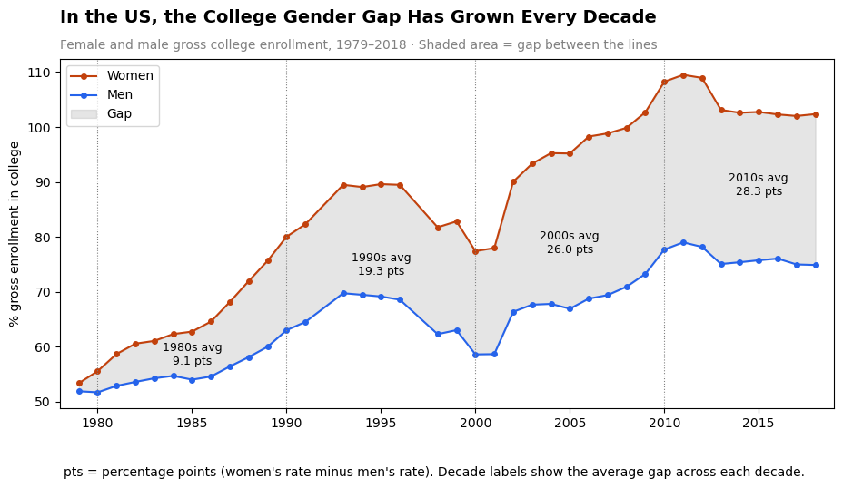

Proposition: "Gender equality in education has been achieved."
FOR the Proposition

Design Decisions and Rationale:
- Data transformation: We calculated a
gapfield by subtracting boys' secondary enrollment from girls' for each year (in percentage points), binned each year into adecadecolumn, and grouped by decade to compute the average gap. Showing decade averages of +0.8, +0.8, and +0.3 points condenses the data into a few small numbers that appear as nearly "equal." - Marks and encodings: Two lines, separated by color (blue for boys, red for girls), show enrollment on the y-axis against year on the x-axis. The gap between them is shaded gray so viewers see the difference directly, and that sliver of gray stays thin across the whole chart.
- Visual design: We started the chart in 1990, when the gap was already small, and chose secondary rather than college enrollment, where the two groups are closest. The y-axis starts at 80% rather than 0, which keeps both lines near the top of the chart and frames the comparison around the high overall enrollment rate.
- Annotation: Labels show the largest gap (3.5 points in 1998) and the most recent gap (0.9 points in 2018). Highlighting that even the worst year differs by only a few points reinforces the message that the gap is negligible, and the title clearly states this conclusion.
AGAINST the Proposition

Design Decisions and Rationale:
- Data transformation: We calculated a
gapfield by subtracting men's college enrollment from women's for each year (in percentage points), binned each year into adecadecolumn, and grouped by decade to compute the average gap. The rising sequence of averages (9.1 → 19.3 → 26.0 → 28.3) supports the title's claim that the gap has grown every decade. - Marks and encodings: Lines with point markers show women's and men's enrollment for each year, separated by color (red for women, blue for men), with position on the y-axis encoding enrollment rate and the x-axis encoding year. A gray shaded area fills the gap, so its widening over time is visible as a growing wedge.
- Visual design: The chart starts in 1979, the year women passed men, leaving out earlier years when men were ahead so the gap only ever appears to widen. The y-axis starts at 50 rather than 0, which stretches the vertical distance between the lines and makes the gap look larger.
- Annotation: Each decade is labeled with its average gap, and dotted lines mark the decade boundaries so the stepwise growth is easy to follow. A caption explains that "pts" means percentage points (women's rate minus men's rate).
Final Reflection
When creating our graphs to reflect these trends, we realized a few things very quickly about the data. First, it contained many null values—for example, when looking at educational attainment rates across higher education, only thirteen years (out of 61) had data on those rates. This meant that for an effective visualization that could show the trend of the educational equality gap, we wanted to visualize the columns that had as much available data as possible, while still effectively communicating our messages. We realized that this would be more difficult than we had thought, as most of the data had either null values or showed the same trend of relative gender equality.
Our approach to this was to look for data that while representing similar educational measures (enrollment), had drastically different growth patterns between women and men. By conducting some basic EDA and producing exploratory data visualizations, we realized that there are significant differences in the data between the secondary (high school) and college enrollment. Secondary enrollment is essentially equal but women lead by far in college enrollment. We then began to make our visualizations—one focused on showing gender equality through secondary enrollment and the other showing gender disparity in college enrollment. What surprised us was how much the trend differed by selecting to look at secondary v. college enrollment, choosing different axis scales, and selecting certain time periods to focus on. We chose similar colors and schemes for both visualizations (line graph, blue represents men and red for women), even shading the gap grey in both to show how graphs that may look the same on the surface can communicate vastly different messages. If a viewer was not paying close attention, these graphs could appear as if they both use the exact same enrollment data but have drastically different conclusions. These conclusions are then emphasized by our titles, which do not just state the data, but state the conclusion we base off of it: this will grab viewers’ attention before much else, and can help shape their opinion of the graph.
Now, we better define and understand “ethical analysis and visualization” as that which does not try to manipulate data to communicate a clear hypothesis already in mind. Similar to conducting a research experiment, data visualization should be done in a manner that communicates the true pattern/trend in the data, without the underlying goal for it to represent a certain conclusion. It is unacceptable to p-hack to get a statistically significant conclusion in research, and I believe that it is similarly unacceptable to select or alter data to communicate a certain goal. However, if the data is fairly represented, I do not think that it is a misleading persuasive choice to highlight certain parts of the data that support a certain claim. Offering specific labels (i.e. of lowest gap percentage/highest gap percentage) can help draw the viewer’s attention to certain parts and can influence their interpretation of the data, but it doesn’t purposefully alter the data to only show one perspective. Overall, “acceptable” persuasive choices are those which don’t deceptively present the data but may offer up a conclusion based on the data—like providing a conclusion-based title or annotating certain patterns in data. “Misleading” persuasive choices on the other hand, don’t make themselves obvious, but involve choosing certain kinds of data, axes, or sects of data (along with misleading titles/captions) that present themselves as true but aren’t.